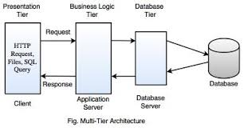

A software architecture that separates an application into layers such as presentation, logic, and data.
The user interface interacts with the application layer, which processes data and communicates with the database layer.
A web application where the frontend, backend, and database are separate.
Improves scalability, flexibility, and maintenance of applications.